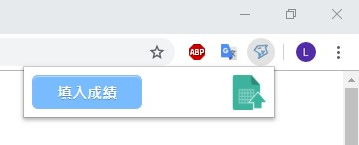
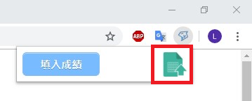
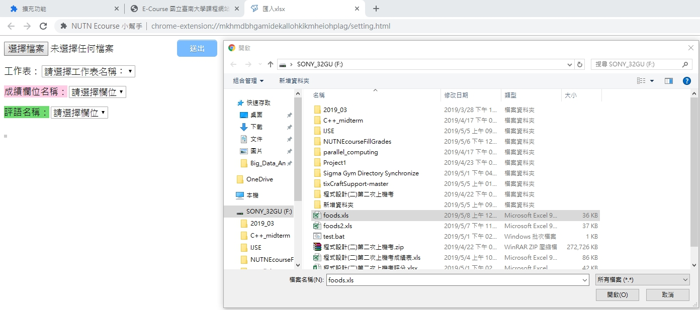
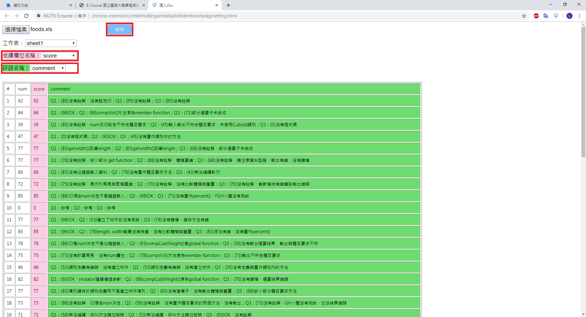
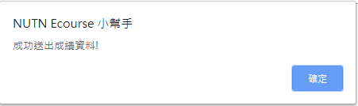
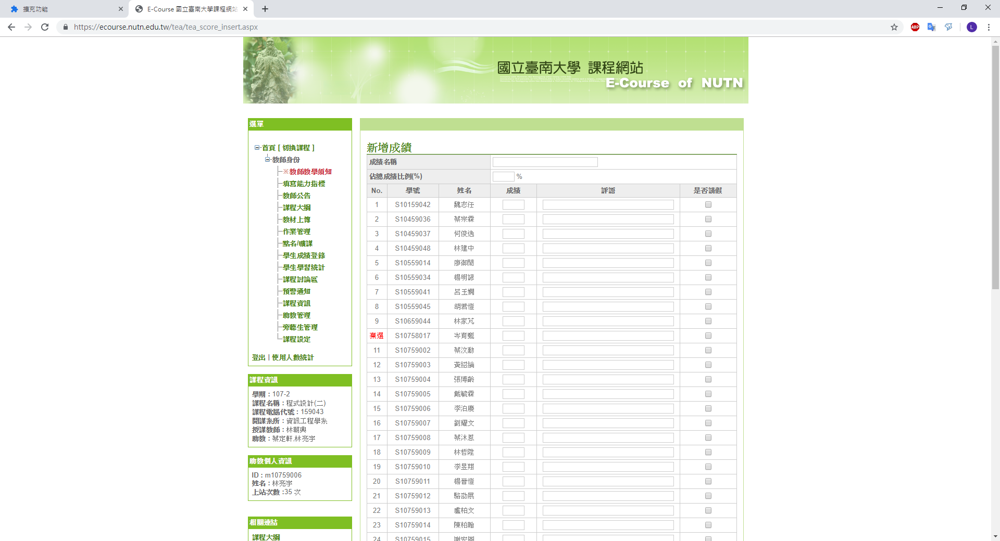
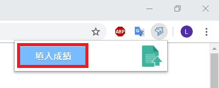
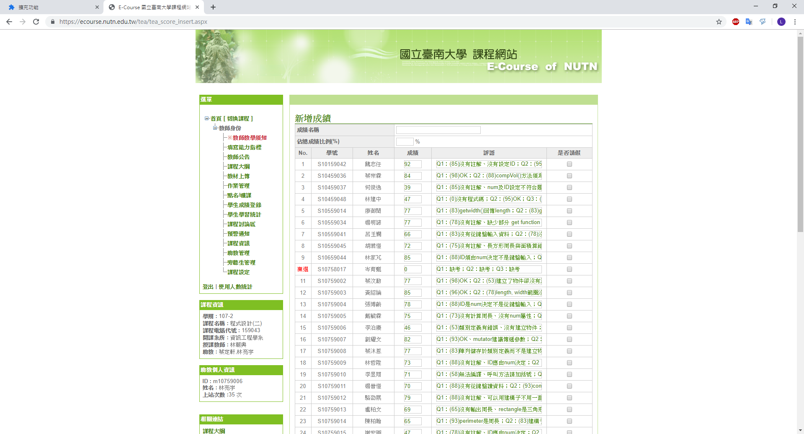

Step 1: 點擊 NUTN Ecourse 小幫手 圖示
Step 2: 點擊右邊 上傳成績表 圖示，將會在新分頁開啟設定頁面
Step 1: 點擊"選擇檔案"，並選擇要填入成績系統的xls檔
Step 2: 上傳完成，並且選擇工作表後，下方便會顯示表格內容，選擇完成績欄位名稱與評語欄位名稱後便可按下送出
Step 3: 送出成功，系統將會給予訊息
Step 1: 回到Ecourse頁面
Step 2: 按下 "送出成績" 按鈕
Step 3: 成功填入學生成績
